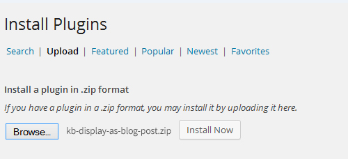
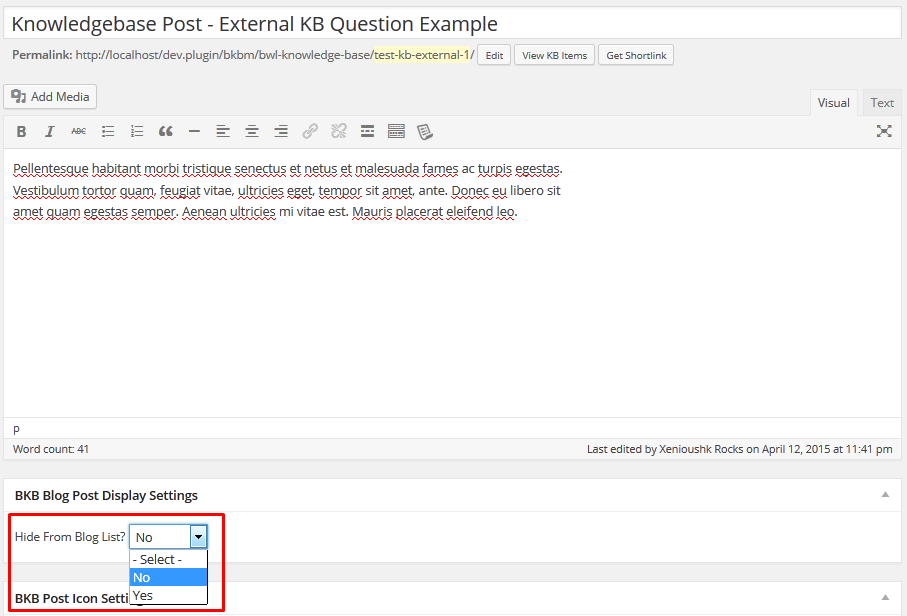
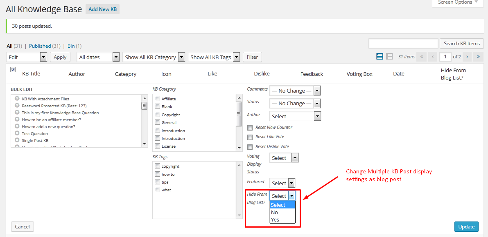
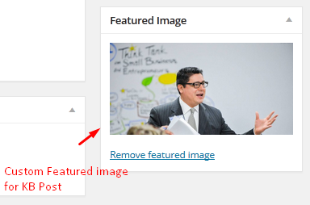
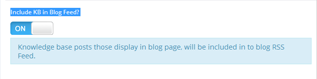

KB Display As Blog Post - Knowledge Base Addon
- Plugin Version: 1.0.4
- Plugin Create Date: 13/04/2015
- Plugin Last Update: 05/01/2018
- Premium Support: Send A Message
- Web Site: http://bluewindlab.net
- Email Us: hkhan.cse@gmail.com
- Developed By: bluewindlab
- Skype: bluewindlab
If you like this theme please spare a minute to rate it.
If you want any support, Please feel free to contact me via my profile page https://codecanyon.net/user/xenioushk.
Requirements
You need at least WordPress version 4.8+ installed for this plugin to work properly.
It is strongly recommended that you always use the latest stable version of WordPress to ensure all known bugs and security issues are fixed.
Other requirements:
- PHP version 5.4.45 or greater.
- MySQL version 5.5.51 or greater.
- BWL Knowledge Base Manager Plugin (Minimum version 1.0.9 required ).
Plugin Installation
To install a plugin, you must first upload the plugin files and then activate the theme. The plugin files can be uploaded in two ways:
- FTP Upload: Using your FTP client, upload the non-zipped plugin folder into the /wp-content/plugins/ folder on your server.
- WordPress Upload: Navigate to Plugins >> Add New >> Upload Plugin. Go to browse, and select the zipped theme folder. Hit "Install Now" and the theme will be uploaded and installed.
Step 01: Go to WP admin dashboard and click on Plugins >> Add New.

Step 02: Click on Upload Plugin.

Step 03:
Once plugin successfully uploaded in your server you will get an message to activate it.
Click on "Activate Plugin" Link and plugin will be ready to use .
After activating plugin, you will redirect in plugins section of wp-admin panel and show new installed plugins information in there.

How to use?
- Once you completed installation process, plugin will automatically include all Knowledge Base items with you're blog posts according to date order. But, You can control Knowledge Base posts display using bulk/quick edit.

- Addon comes with built-in show/hide custom meta box option to control Knowledge Base posts display. This way, you can easily handle view status, while you're adding/editing KB posts.

- If you want to change settings for single Knowledge Base post, then you can use quick edit(inline editing) option.

- If you want to change settings for multiple Knowledge Base post, then you can use bulk edit option.

- Addon allows you to upload featured image for Knowledge Base items. This way, you can easily set featured image for Knowledge Base Post and display with blog post(Theme Support Required).

Option Panel
From version 1.0.3 we added an unique option to include Knowledge base posts in to Regular blog post RSS feed. To enable this option go to Plugin Option panel > General tab and you will get an option "Include KB in Blog Feed? ". Just turn it ON and KB post automatically included in to blog feed.

Upgrade Notes:
Please take a backup before update all files and folder.
2018, January, 05 - v 1.0.4
Replace Addon all files and folders.
2016, June, 07 - v 1.0.3
Replace Addon all files and folders.
2016, April, 27 - v 1.0.2
Replace Addon all files and folders.
2015, November, 20 - v 1.0.1
Replace Addon all files and folders.
2015, April, 13 - v 1.0.0
Initial release.
Change Log
2018, January, 05 - v 1.0.4
- Fixed minor styling issues.
- Improved Documentation.
2016, June, 07 - v 1.0.3
- Fix multisite notification issue.
- Add option to include KB post in to Blog Feed.
- Improved Documentation.
2016, April, 27 - v 1.0.2
- Added Multisite support.
- Improved Addon Performance.
- Improved Documentation.
2015, November, 20 - v 1.0.1
- Improved Addon Performance.
- Improved Documentation.
2015, April, 13 - v 1.0.0
- Initial release.
Sources and Credits
- Ideas By BlueWindLab
- Color Picker By http://www.eyecon.ro/colorpicker
Our Products
-
 Cobbler Master - Shoe Repair and Leather Accessories Service Center
Cobbler Master - Shoe Repair and Leather Accessories Service Center
-
 Repair Geek - Laptop And Computer Fixing Service Center HTML5 Template
Repair Geek - Laptop And Computer Fixing Service Center HTML5 Template
- Generosity - Charity, Fundraising & Non-Profit HTML5 Template
-
 Auto Repair - Maintenance and Mechanic Center HTML5 Template
Auto Repair - Maintenance and Mechanic Center HTML5 Template
-
Bicycle Fix - Bicycle Repair, Maintenance and Tune-Ups Shop HTML5 Template
-
 Fit Bone - Physiotherapy and Massage Therapy Center
Fit Bone - Physiotherapy and Massage Therapy Center
- Mind Trainer - Psychology and Counseling Center HTML5 Template
-
 Senior Care - Senior Citizens & Elders Support HTML5 Template
Senior Care - Senior Citizens & Elders Support HTML5 Template
- Greenlife - Nature & Environmental Non-Profit HTML5 Template
- Knowledge Desk - Responsive Knowledgebase HTML5 Template
 Knowledgedesk - Knowledge Base WordPress Plugin
Knowledgedesk - Knowledge Base WordPress Plugin
 Wish - Charity WordPress Plugin
Wish - Charity WordPress Plugin
 Restore - Computer, Mobile & Digital Repair Service WordPress Plugin
Restore - Computer, Mobile & Digital Repair Service WordPress Plugin
 Greenlife - Nature & Environmental WP Plugin
Greenlife - Nature & Environmental WP Plugin
 Appeal – Fully Functional Petition WordPress Plugin
Appeal – Fully Functional Petition WordPress Plugin